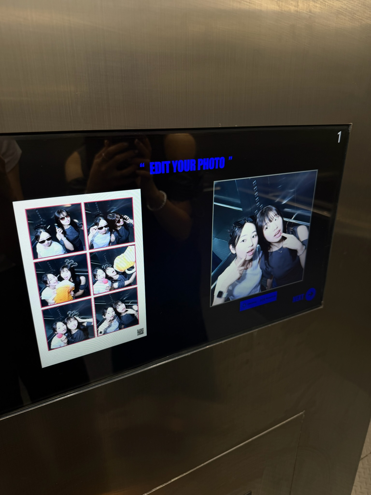
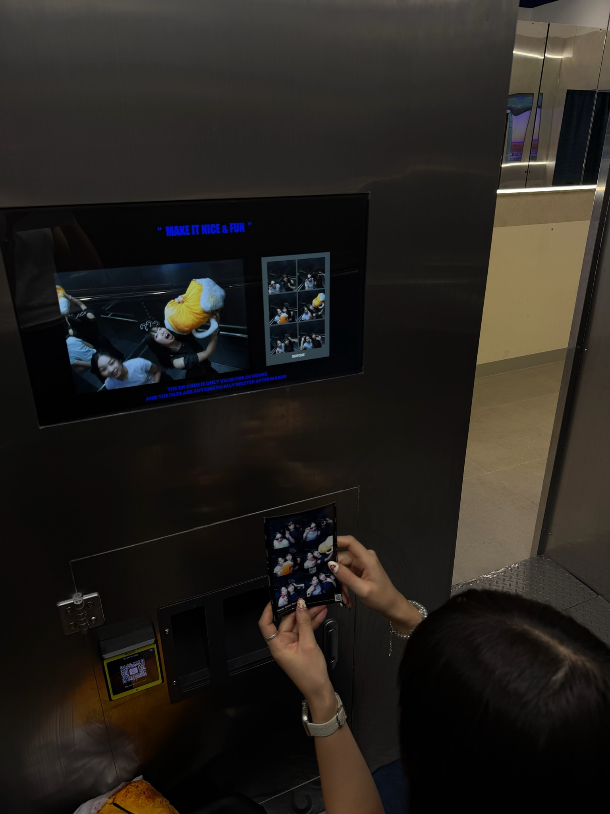
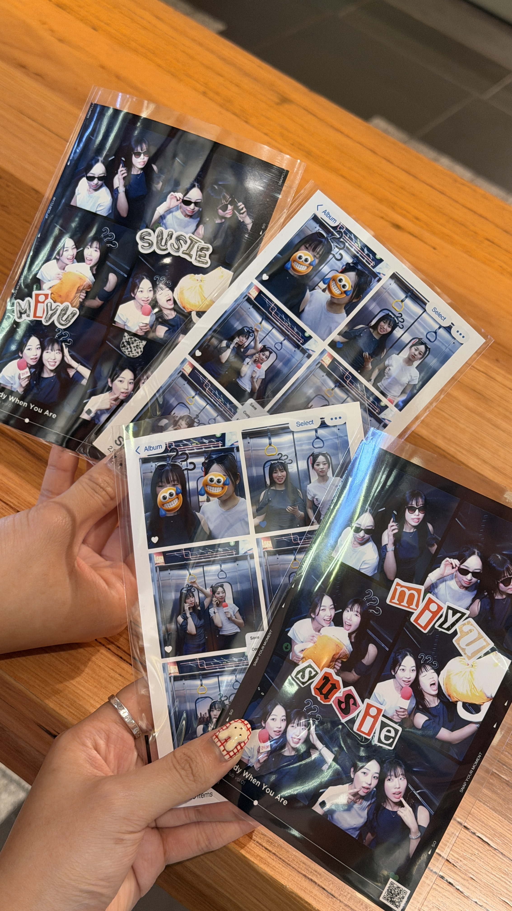
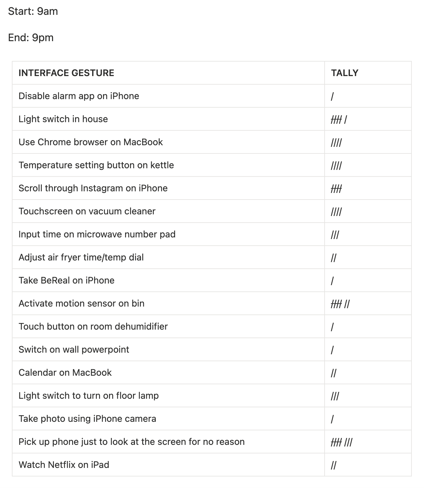
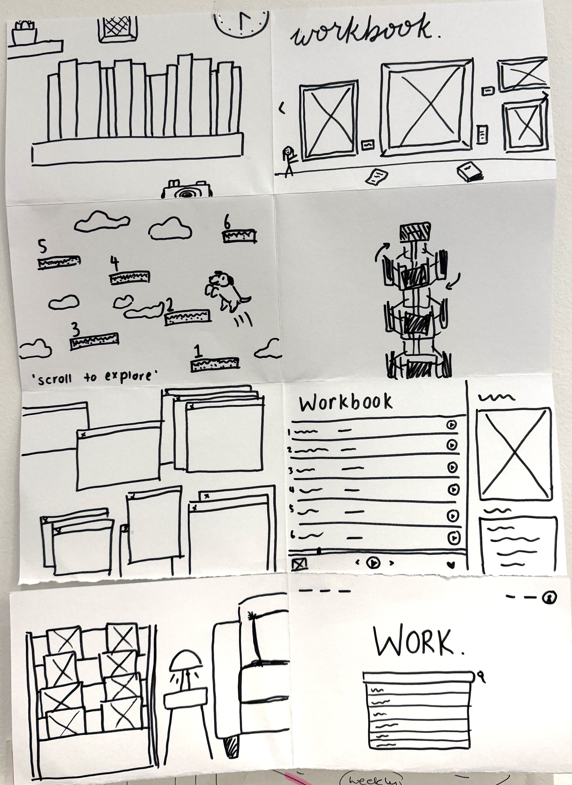
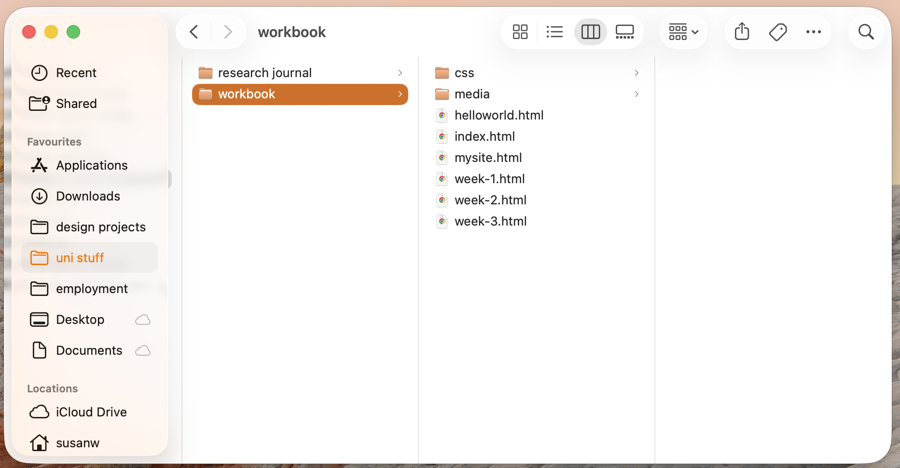
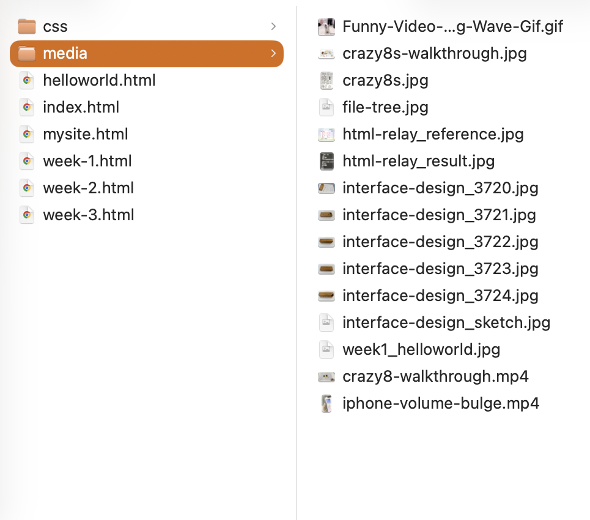

Find 3 examples of noteworthy interactivity from reality (not fiction).
Apple iOS design details Out of a seemingly unending list, one minor detail that stuck with me was the digital screen ‘bulge’ upon pressing the physical volume buttons. It’s such a minor detail, but makes a massive difference in conveying an organic user experience by blurring the lines between physical and digital interactivity.
My first attempt at adding a video using HTML; I learnt how to add video controls and turn settings on for 'loop' and 'mute' by adding them within the < video> tag.
IMAGINATOR – An immersive audio-visual play experience located in Docklands, Melbourne, where interactive installations from multiple digital artists transport visitors into an imaginative, futuristic world enabled by technology.
Korean ‘self-studio’ photo-booths — These typically offer a wide selection of fun accessories (novelty headbands, sunglasses, props), and take a set number of photos upon inserting money, followed by a customisation session where visitors can decorate their photos with frames, digital stickers and text before they are printed.
A concept originating from Korea, while not novel to us (think passport/ID photo booths at the mall), has recently become more widely popularised with students and young adults in Western countries, particularly in Melbourne. There are currently multiple different franchises in the CBD alone — HamaFilm, Life4Cuts, SnapClub being the most recently-opened. The level of interactivity offered is no longer just about taking photos and printing them, but about the overall social and creative experience it creates.



Black Mirror: Fifteen Million Merits (2011)
Notes on interfaces throughout the film:
in the world portrayed, humans live a life surrounded by screens, and interfaces are what constantly make up the 4 walls of their entire world
they interact with these interfaces more than they do with each other - vending machine, bathroom mirror, even the door handle opening from their bedroom to the bathroom is on a screen
technology is powered by the people riding exercise bikes, and in return, the people receive ‘merits’ they can use as a universal currency to buy digital items
people are confined to their rooms, but are able to observe happenings in the ‘outside’ world from here, using merits — e.g. the audience of ‘Top Shot’, a reality TV talent show, are represented as a crowd of avatars projected across various screens, but from the audience perspective, they are watching a live broadcast from their beds
instead of offering an escape from the real world, the digital interfaces end up being a confinement that traps people from the real world
foreshadowing the state of the world and how people interacted during COVID times
Over the course of 12 hours in one day, list all of the ways you interact with your technology, your 'Interface gestures'.

Initial table tallying all my interactions with technology over 12 hours.
Crazy 8s

The eight very different design concepts I sketched for Workbook A.
File Tree


REFLECTION
This week, I revisted HTML and CSS for the first time in almost 2 years, so everything is a bit rusty.
The structure of this page is quite indicative of my current level.
My main focus this week was on familiarising myself with how to set up an HTML file, the function of different tags, and where to place CSS in the document (in-line, in head, and externally). Figuring out how to use < div>'s, class and IDs was the most challenging aspect. I also got to experiment a bit with different fonts and text/background colour.